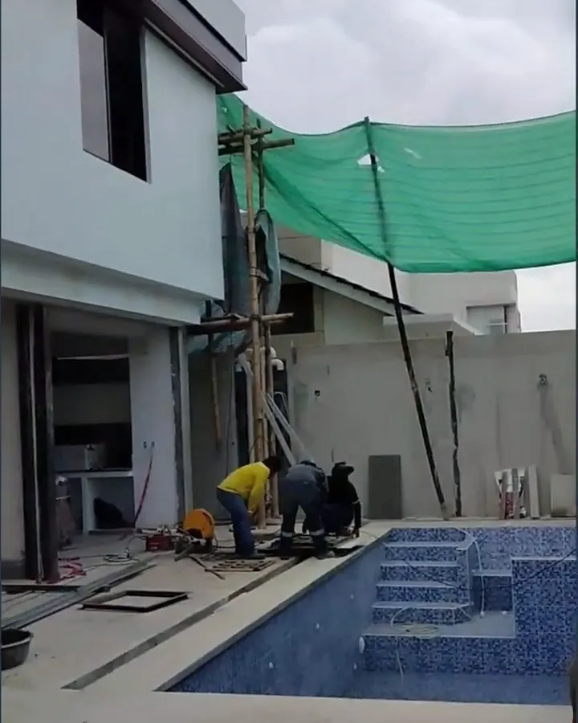
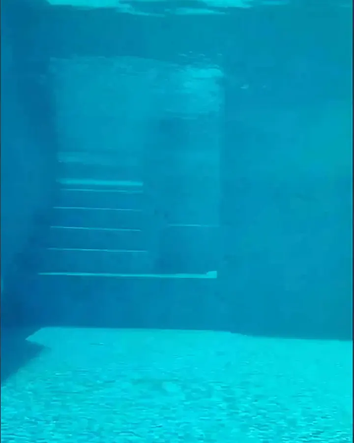

¿Cuánto cuesta construir una casa de 2 pisos en Guayaquil?
Depende sobre todo de los metros y de los acabados. Con los rangos que se publican hoy en el mercado, una casa de dos pisos de 150 m² puede ir desde unos $80.000 hasta más de $150.000. Aquí te explicamos de dónde sale esa diferencia.

Precio por metro cuadrado: lo que se publica en 2026
Las referencias del mercado varían bastante entre fuentes, porque cada una incluye cosas distintas:
| Nivel de acabados | Rango publicado | Fuente |
|---|---|---|
| Residencial estándar | $550 – $850 / m² | Roxy Crespo Arquitectura |
| Llave en mano, con acabados | $550 – $900 / m² | La Guía del Emprendedor |
| Básico (incluye obra gris + acabados) | $800 – $1.000 / m² | Minimal Studio |
| Premium / personalizado | $950 – $1.600 / m² | Roxy Crespo · Minimal Studio |
Usa estos números como orientación, no como presupuesto. Lo que define tu precio real es el suelo, el diseño, la estructura y los acabados que elijas.
Ejemplo: casa de 2 pisos de 150 m²
- Con acabados estándar ($550 – $850 / m²): entre $82.500 y $127.500.
- Con acabados premium (desde $950 / m²): desde $142.500.
A eso hay que sumar el diseño y los planos (en Guayaquil suelen ir de $1.500 a $4.000 para una vivienda mediana), el permiso de construcción y, si el terreno lo pide, el estudio de suelos.
En qué se va el dinero, etapa por etapa
- Diseño, planos y permiso. Es lo más barato y lo que más dinero ahorra después.
- Cimentación y estructura. En Guayaquil el tipo de suelo pesa mucho: no es lo mismo construir en vía a la costa que en zonas de relleno.
- Mampostería, losas y cubierta. El cuerpo de la casa, lo que se conoce como obra gris.
- Instalaciones. Eléctricas, sanitarias, cisterna y bomba.
- Acabados. Pisos, baños, cocina, puertas, ventanas y pintura. Aquí es donde más se dispara o se controla el presupuesto.
Caso real: casa de 3 niveles con piscina y sótano en Samborondón
Una de nuestras obras: 400 m² en 3 niveles, con piscina y sótano. Así se ve cada etapa, desde la cimentación hasta la fachada terminada.



El detalle que todos preguntan: la ventana subacuática
En esta casa, desde el sótano se ve la piscina por dentro a través de una ventana subacuática. Un detalle así se resuelve desde el diseño estructural, no se improvisa en obra. En el video te explico cómo se construye una ventana de vidrio templado de 40 mm de 2 × 1 m.

▶ Cómo construir una ventana subacuática para piscinas con vidrio templado de 40 mm — canal Arquitecto Gratis
Cómo pedir un presupuesto que no cambie a mitad de obra
- Pide el presupuesto por rubros y por etapas, no un solo número por metro cuadrado.
- Pide que te digan qué no incluye: tasas, acometidas, muebles, estudios.
- Pide un precio cerrado por etapa y pagos atados a avances, no a fechas.
- Antes de cotizar, que alguien visite el terreno. Nosotros hacemos una visita técnica de diagnóstico que se descuenta si contratas.
Cotiza tu casa por etapas
Te armamos un presupuesto por rubros y etapas, con lo que incluye y lo que no, antes de mover un bloque.
Arquitecto en Guayaquil, Samborondón y Daule. Más de 360 mil personas siguen sus videos de obra como "Arquitecto Gratis".